Explore
Table of Contents
1. Introduction
1.1 What is Explore?
Explore is a web-based platform developed by EPC Group for managing the full lifecycle of mining and drilling operations — from blast pattern design through drill execution, geological data capture, vibration monitoring, and post-blast analysis. The platform connects field operators using tablets (Expertab) with site engineers and regional managers through a unified interface, providing real-time visibility into every stage of the drill-to-ignition (DTI) workflow.
Explore supports open-pit mining operations and covers the following functional domains:
- Blast pattern planning and design (hole positioning, geometry, charging)
- Drill session tracking and monitoring
- Geological data collection (lithology, mineralization, hole conditions)
- Ground vibration monitoring and compliance
- Explosive product and supplier management
- Equipment fleet tracking and utilization
- Operational KPIs, reporting, and analytics
- Workflow-based approval processes
- Interactive site mapping with aerial imagery
1.2 Who is this manual for?
This manual is intended for all users of the Explore platform. Depending on your role, certain sections will be more relevant to you:
| Role | Description | Key chapters |
|---|---|---|
| Field Operator (explore_app_user) | Drill operators and blast team members working on site | 2, 3, 5, 6, 7, 8, 9, 17 |
| Site Manager (manage_site) | Engineers and managers responsible for a specific mining site | 2–16 |
| Regional Manager (manage_area) | Managers overseeing multiple sites within a region | 2, 3, 4, 9, 11, 14, 18 |
| Administrator (manage_user) | System administrators managing users, organizations, and platform configuration | 2, 3, 18 |
| Organization Manager (org_manager) | Executives with visibility across the entire organization | 3, 14, 18 |
1.3 Glossary of Mining and Drilling Terms
| Term | Definition |
|---|---|
| Assay | Chemical composition analysis of rock samples taken during drilling, used for ore-grade estimation. |
| Azimuth | The horizontal angle (measured clockwise from north) defining the direction of a drill hole. |
| Bench | A horizontal step or level in an open-pit mine where blast patterns are designed and executed. |
| Blast / Tir | A controlled detonation event using explosives placed in pre-drilled holes to break rock. |
| Blast Pattern | The planned arrangement of drill holes for a blast, including positions, depths, azimuths, and charging parameters. |
| Blast Hole | An individual hole within a blast pattern, defined by its position, depth, diameter, azimuth, and inclination. |
| Blasted | Status indicating that a blast has been detonated. |
| Bulk Explosive | Explosive material delivered in loose form (not cartridged), measured in kilograms. |
| Cartridge | Pre-packaged explosive charge with specific diameter and weight. |
| Control Point | A fixed survey reference point with known GPS coordinates, used for positioning and vibration monitoring. |
| Detonating Cord (Detcord) | A flexible cord containing explosive, used to transmit detonation between holes. |
| Detonator | A device used to initiate the detonation of explosives in a blast hole, with a specified delay time. |
| Discontinuity | A fracture, joint, or structural break in rock, recorded during geological logging. |
| Drill Session | A recorded period of drilling activity capturing timestamps, depth progress, equipment used, and operator data. |
| DTI (Drill-To-Ignition) | The complete workflow from drilling a hole to detonating it. |
| Expertab | EPC Group's proprietary tablet application used by on-site operators for drill navigation, data capture, and synchronization with Explore. |
| Expertir | A real-time drill navigation system that guides operators to the correct drill position and angle. |
| Fragmentation | The size distribution of rock pieces after a blast. Measured by analyzing muckpile images. |
| Hiboo | A third-party fleet management platform providing equipment utilization metrics, fuel consumption, and machine health data. |
| Hole Condition | The physical state of a drill hole (e.g., collapsed, water-filled, intact). |
| Inclination | The vertical angle of a drill hole relative to the horizontal plane. |
| KPI (Key Performance Indicator) | Operational metrics such as meters drilled per shift, equipment utilization, or blast efficiency. |
| Lithology | The classification and description of rock types encountered during drilling. |
| Mineralization | The presence and characteristics of ore-bearing minerals in rock samples. |
| Muckpile | The pile of broken rock resulting from a blast, before it is loaded and hauled away. |
| Open Pit | A surface mining method where rock is extracted from a large open excavation. This is the primary mining type supported by Explore. |
| Orthophoto | A geometrically corrected aerial photograph used as a map layer, providing an accurate representation of the ground surface. |
| PPV (Peak Particle Velocity) | The maximum ground vibration speed measured at a monitoring point, expressed in mm/s. A key compliance metric. |
| Region / Area | An organizational grouping of multiple mining sites within a company. |
| Rotation | A work rotation period, typically spanning multiple shifts. |
| RQD (Rock Quality Designation) | A standard measure of rock mass quality based on core recovery during drilling. |
| Seismograph / Sismograph | A vibration monitoring instrument placed at control points to record ground vibrations during blasting. |
| Shift | A defined work period (typically 8 to 12 hours) during which drilling or blasting activities take place. |
| Site | A physical mining or quarry location with its own equipment, personnel, and operational data. |
| Vibration Record | A single vibration measurement captured by a seismograph, containing velocity and frequency data across three axes. |
| Workflow | A state machine governing the lifecycle of domain objects (e.g., blasts), defining approval steps and transitions. |
| Zone | A defined operational area within a mining site. |
1.4 Conventions Used in This Document
Throughout this manual, the following conventions are used:
- Bold text indicates a button label, menu item, or field name visible in the interface.
Monospace textindicates a technical value, status code, or system identifier.- "Quoted text" indicates a message displayed by the system.
- Sections marked with a role badge (e.g., Site Manager) indicate features restricted to users with that role.
- Screenshots and diagrams reference the English version of the interface. The platform is also available in French and Spanish.
2. Getting Started
2.1 Accessing the Platform
Explore is a web application accessible through any modern browser. The recommended browsers are Google Chrome (latest version) and Mozilla Firefox (latest version). The platform URL is provided by your site or regional administrator.
No software installation is required on your computer. For on-site field operations, the companion Expertab tablet application is used separately (see Appendix E).
2.2 Login and Authentication
Explore uses Keycloak as its identity provider. When you navigate to the platform URL, you are presented with the login screen.
To log in:
- Enter your Username (email address) in the first field.
- Enter your Password in the second field.
- Click the Log in button.
If your credentials are valid and you have access to multiple sites, a Select a site dialog appears. Choose your site from the My sites dropdown and confirm.
Common login messages:
| Message | Meaning |
|---|---|
| "Your username and/or password are incorrect" | The credentials entered do not match any account. Verify your username and password. |
| "Your account has been deactivated" | Your account has been disabled by an administrator. Contact your site manager. |
| "Your account is valid but you are not authorized to access the application" | Your Keycloak account exists but lacks the required Explore role. Contact your administrator. |
| "An error occurred during the connection, please try again later" | A server-side issue prevented login. Try again in a few minutes or contact support. |
A Contact support link is available at the bottom of the login screen.
2.3 Password Creation and Reset
First-time password creation
When your account is first created, you receive an email with a link to set your password. Click the link to reach the Creating the password page.
- Enter a password of at least 10 characters.
- Confirm the password by typing it again.
- Click Confirm.
If the link has expired, the message "Your authentication token has expired" is displayed. Contact your administrator to request a new invitation.
Forgotten password
From the login screen:
- Click Forgotten password?
- Enter your email address in the dialog that appears.
- Click Send. A reset email will be sent to your address.
- Follow the link in the email to reach the Resetting the password page.
- Enter your new password (minimum 10 characters), confirm it, and click Save.
Changing your password
Once logged in, you can change your password at any time:
- Click on your name in the top-right corner of the screen.
- Select Change my password from the dropdown menu.
- Follow the prompts to set a new password.
2.4 Interface Overview
The Explore interface is organized into three main areas:
Left sidebar
The left sidebar is the primary navigation menu. It is divided into two collapsible sections:
- Config — Contains setup and reference data pages (users, regions, sites, organization settings). Visible to users with administrative roles (manage_user, manage_area, manage_site).
- Operations — Contains day-to-day operational pages (Site, Projects, Operations, Indicators, Dashboard). Visible to all users with the explore_app_user role.
The EPC Group logo at the top of the sidebar returns you to the home page. The current application version (frontend and backend) is displayed at the bottom.
Top navigation bar
The top bar displays:
- The current page title, which updates dynamically as you navigate.
- A site and region selector (dropdown) allowing you to switch between sites. Use the search field to quickly find a site.
- An organization selector for users with access to multiple organizations.
- A user menu (your name, top right) with options to change language, change password, contact support, view your profile, or log out.
When not logged in, the top bar displays language selection flags (English, French, Spanish).
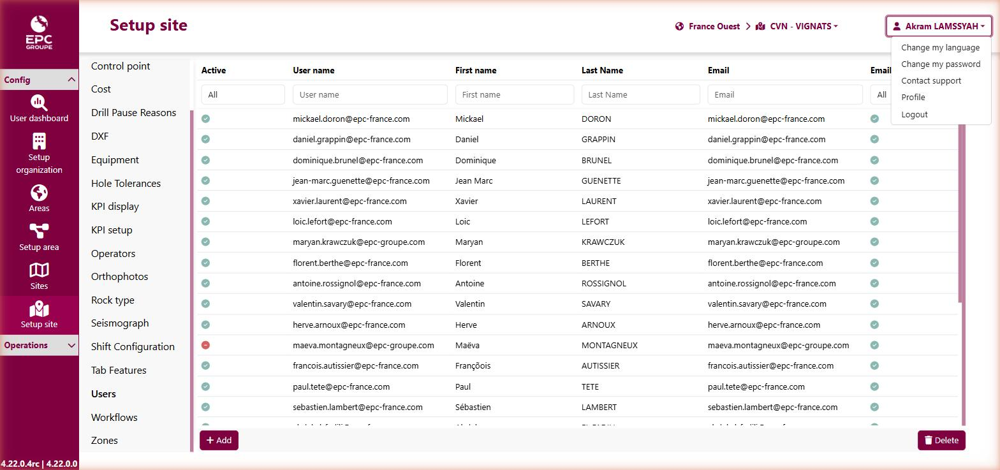
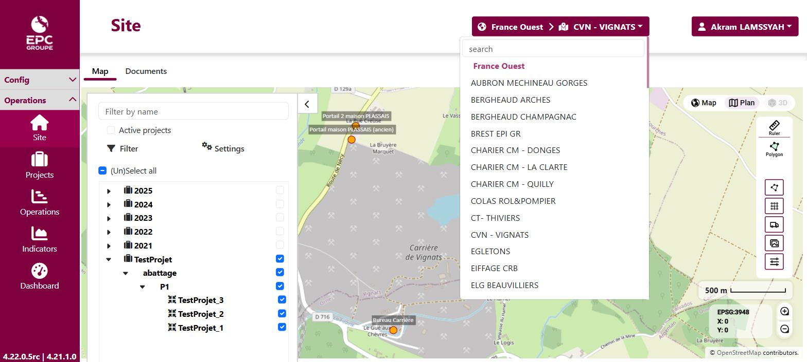
Breadcrumb
On pages with hierarchical depth (e.g., inside a project or blast), a breadcrumb trail appears below the top bar showing the navigation path: Projects > Project Name > Blast Name > Step Name. Click any item in the breadcrumb to navigate back to that level.
2.5 Changing Language
Explore is available in three languages: English, French, and Spanish.
To change your language:
- Click on your name in the top-right corner.
- Select Change my language.
- In the modal that appears, select your preferred language (each option displays its country flag).
- Click Save.
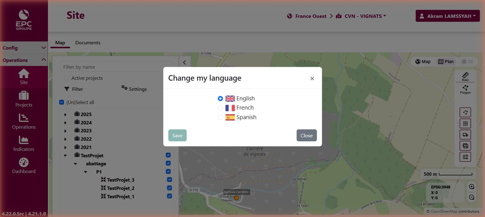
The interface immediately refreshes in the selected language. Your preference is saved to your profile.
2.6 User Profiles and Roles
Access to Explore features is governed by roles assigned to your account in Keycloak. The main roles are:
Field Operator (explore_app_user)
The default role for all Explore users. Grants access to operational features: viewing the site dashboard, browsing projects and blasts, accessing operations charts, indicators, and submitting survey feedback.
Site Manager (manage_site)
In addition to field operator access, site managers can create and configure sites, manage site-level settings (zones, equipment, shifts, workflows, KPIs), manage operators, and access cost tracking. They can also configure the organization-level product sources.
Regional Manager (manage_area)
Regional managers can create and manage regions (areas), configure region-level products and workflows, manage geology reference data, and access the region setup pages. They can view the area dashboard for cross-site analytics.
Administrator (manage_user)
Administrators manage user accounts, assign roles, and configure organization-wide settings. They have access to the user management page and user dashboard.
Organization Manager (org_manager)
Organization managers have visibility across the entire organization. They can access the area dashboard with organization-wide analytics and reporting.
A single user can hold multiple roles. Role assignment is managed by administrators through the user management interface or directly in Keycloak.
3. Navigation and Dashboard
3.1 Home Page — My Site
After logging in and selecting a site, the My Site page is your landing page. It provides an overview of the selected site through a tabbed interface:
Map tab
The default tab displays an interactive map of the site (powered by MapBox). The map shows blast patterns, drill holes, equipment positions, and terrain layers. For detailed map usage, see Chapter 13.
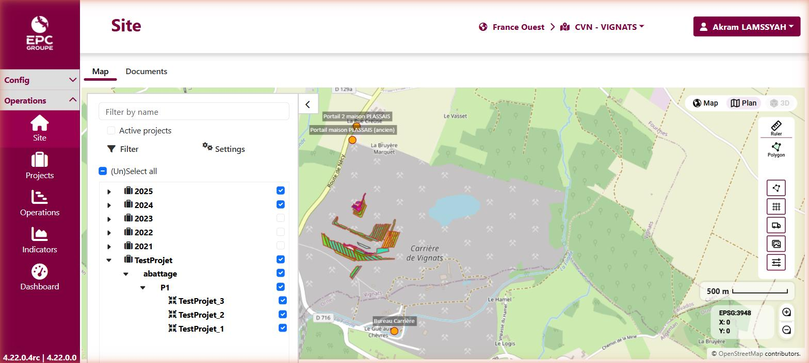
Documents tab
Displays the site name, country, and a file explorer for managing site-level documents. You can create folders, upload files, download, rename, cut/paste, and delete items. See Document Management per Step for more details on document management.
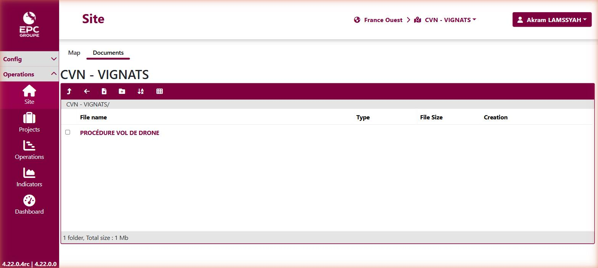
Dashboard tab
Available for specific organizations, this tab embeds a Metabase analytics dashboard with site-level KPIs and metrics.
Hiboo tab
Available for specific sites with Hiboo integration enabled, this tab displays equipment fleet metrics from the Hiboo platform.
3.2 Site and Region Selector
The site and region selector appears in the top navigation bar whenever you are working within a site context. It displays the current region name and site name.
To switch sites:
- Click on the site/region selector in the top bar.
- Use the search field to filter by name.
- Sites are grouped by region. Click on the desired site to switch.
The entire interface updates to reflect the selected site's data.
When working in region setup views, a separate region selector dropdown appears, allowing you to switch between regions.
3.3 Organization Selector
For users with access to multiple organizations (multi-tenant setup), an organization selector appears in the top bar on relevant pages (e.g., user dashboard). Click the selector and choose the organization to view its data.
3.4 Main Dashboard and KPIs
The Dashboard page (accessible from Operations > Dashboard in the left sidebar) displays the Site Dashboard for the currently selected site. The page is organized as follows:
- Global / Custom tabs — Switch between the standard (Global) dashboard and any custom dashboard configured for your site.
- Sub-tabs — The Global dashboard is divided into topical sections: General, Drilling, Deliveries, Loading, Blast Output, Vibration, and Equipment.
- Filters — A Date filter and an IsBlasted filter allow you to narrow the displayed data.
- Export tab as PDF — Click this button (top right) to export the current tab as a PDF document.
The General sub-tab shows summary cards (e.g., Number of blasts, Percentage of Completed blasts), charts (Blasts per month, Number of blasts per Zone), a Blast Locations map, and a Blast dates table.
3.5 Metabase Dashboard (Embedded Analytics)
Explore integrates with Metabase to provide advanced analytics capabilities. Metabase dashboards are embedded within the platform at several levels:
- Site dashboard — Site-specific operational metrics
- Region dashboard — Cross-site analytics for regional managers
- Client view — Organization-level reporting
- Equipment blast dashboard — Equipment performance per blast
- StevinRock dashboard — Geological analytics
These dashboards are preconfigured and automatically filtered to your site, region, or organization context. Contact your administrator if you need access to additional dashboards.
4. Site Management
This chapter is primarily relevant to users with the Site Manager (manage_site) or Regional Manager (manage_area) role.
4.1 Site List and Search
Navigate to Config > Sites in the left sidebar to view the list of all sites you have access to. The list displays site names and basic information. Click on a site to view its details, or use the search functionality to filter the list.
You can filter the list to show only Active sites.
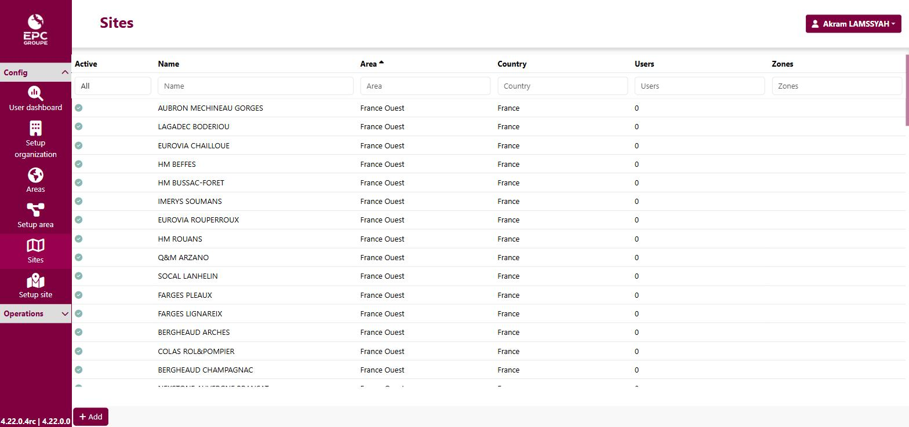
4.2 Creating and Editing a Site
To create a new site, click the Add button from the sites list. Fill in the required information (site name, region, GPS coordinates, country) and save.
To edit an existing site, select it from the list and modify its properties.
4.3 Site Configuration
Navigate to Config > Setup site in the left sidebar, then select the site to configure. The site setup page presents a left-hand navigation menu with the following configuration sections: Blasts hierarchy, Control point, Cost, Drill Pause Reasons, DXF, Equipment, Hole Tolerances, KPI display, KPI setup, Operators, Orthophotos, Rock type, Seismograph, Shift Configuration, Tab Features, Users, Workflows, and Zones.
Blasts Hierarchy
Configure how blasts are organized and displayed in the project tree. The hierarchy is defined using three levels of dropdown selectors:
- Level 1 — The top-level grouping (e.g., Project)
- Level 2 — The second-level grouping (e.g., Status)
- Level 3 — The third-level grouping (e.g., Zone)
Click Confirm to apply the hierarchy configuration.
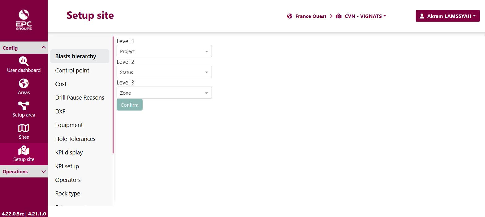
Control Points
Manage fixed survey reference points for the site. The control points table displays the following columns:
| Column | Description |
|---|---|
| Active | Status indicator (green = active, red = inactive) |
| Point number | Unique point identifier |
| Name | Descriptive name for the control point |
| X | X coordinate |
| Y | Y coordinate |
| Z | Altitude (meters) |
| PPV | Peak Particle Velocity reference value |
| K | Site-specific attenuation constant |
| α (Alpha) | Site-specific attenuation exponent |
Control points are used for positioning accuracy and as reference locations for vibration monitoring stations. Click + Add to create a new control point.
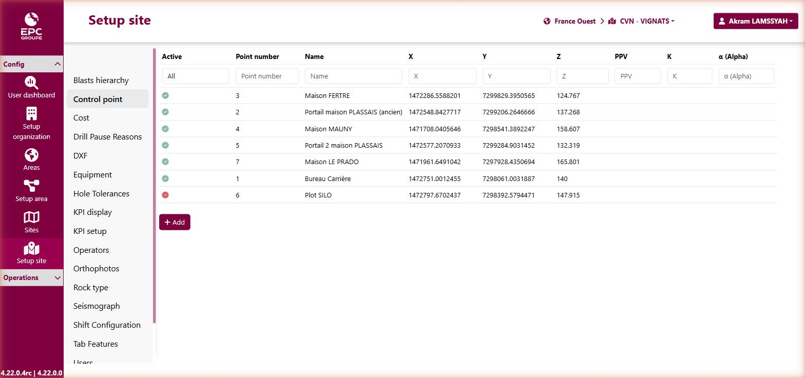
Cost
Configure cost centers and cost parameters for the site. This allows tracking of operational costs associated with drilling, blasting, equipment, and materials.
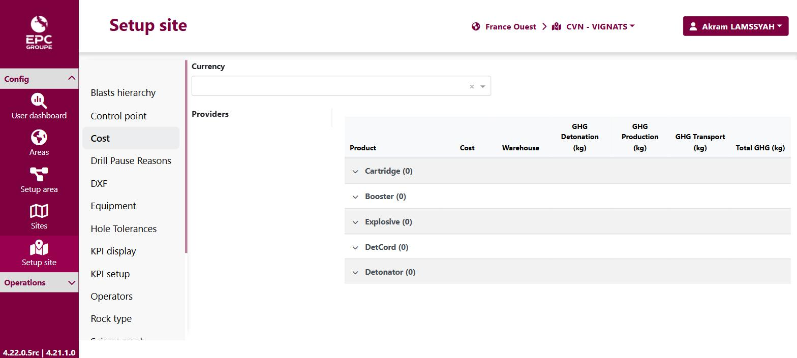
Drill Pause Reasons
Define the list of reasons that can be selected when a drill operator records a pause during a drilling session. Common examples include equipment maintenance, shift change, fuel refill, or weather conditions. Each reason has a unique name and identifier.
DXF
Upload and manage DXF files (AutoCAD drawings) for the site. These files can represent mine plans, bench layouts, or design drawings and are overlaid on the interactive map for reference.
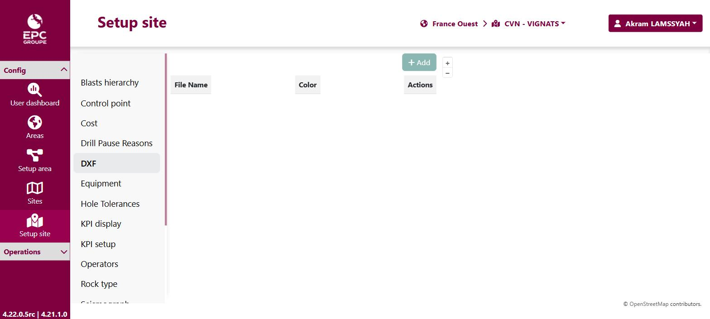
Equipment
Register equipment used on the site. The equipment list displays the following columns:
| Column | Description |
|---|---|
| Name | Equipment name or identifier |
| Model | Equipment model reference |
| Type | Equipment type (e.g., MOBILE) |
| External connection | External connection status (true/false, for Hiboo integration) |
Click + Add to register a new piece of equipment. Use the Sync button to synchronize equipment data with the external fleet management system (Hiboo).
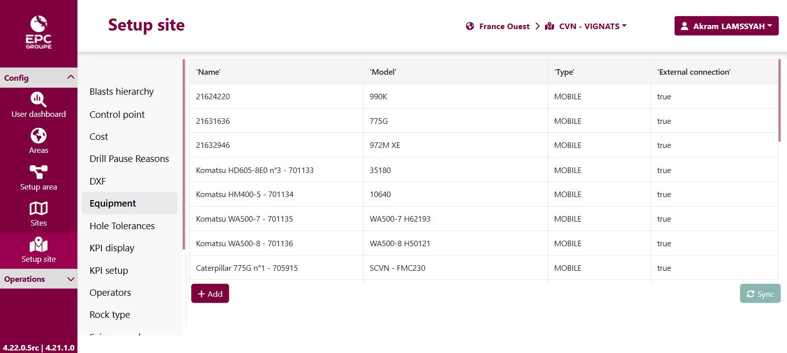
Hole Tolerances
Define acceptable tolerance thresholds for drilling accuracy on this site. For each metric (e.g., position, depth, azimuth, inclination), you can set:
- As Designed maximum and minimum deviation — the range within which a hole is considered acceptably placed.
- In Tolerance maximum and minimum deviation — a tighter range indicating ideal accuracy.
These thresholds are used to color-code holes on the map and in quality reports, highlighting deviations from the planned design.
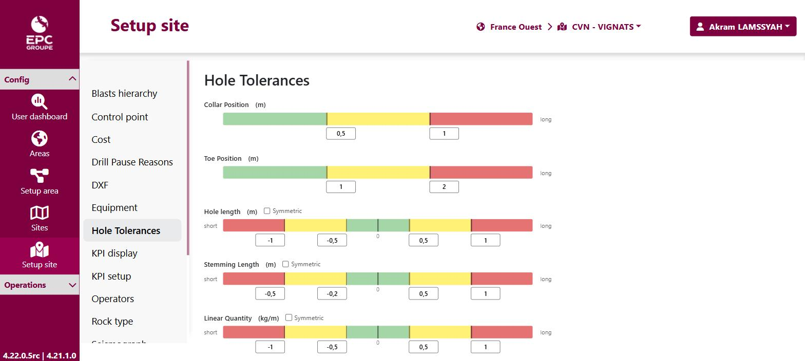
KPI Display
Configure how KPIs are displayed for this site, including which KPIs are visible and their display order.
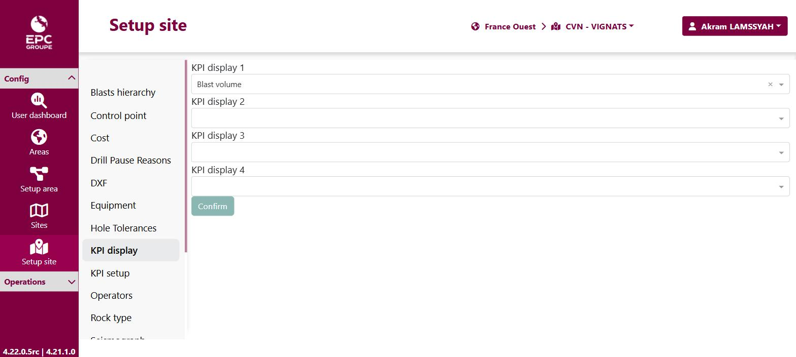
KPI Setup
Configure which Key Performance Indicators are tracked for this site. The KPI setup table shows the following columns:
| Column | Description |
|---|---|
| Name | KPI name and description |
| Type | Category (e.g., Vibrations, Drilling operations, D&B Design, Financials, Blast performance) |
| Calcul mode | Calculation method (Manual, Sum, Average) |
| Unit | Unit of measurement |
| Target value | Target value with Min/Max range |
| Access | Access level (Hidden, Read, Read-Write) |
| Enabled | Active/Inactive status |
| Details | Link to detailed KPI configuration |
At the bottom of the page, the Set predefined KPI config feature lets you apply a preset KPI profile from the Profil dropdown. Click Confirm to apply or Cancel to discard.
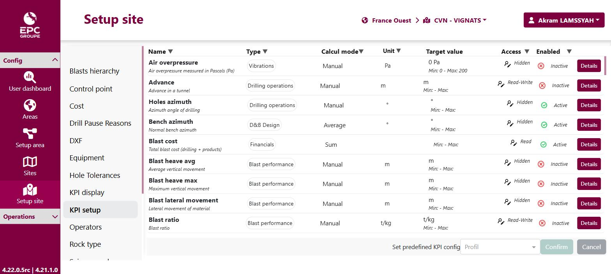
Operators
Manage the list of operators (drill operators, blasters, and other field personnel) assigned to this site. The operators table displays the following columns:
| Column | Description |
|---|---|
| ID | Operator identifier (typically an email address) |
| Name | Operator name |
| Roles | Assigned role (e.g., Blaster) |
Click + Add to register a new operator.
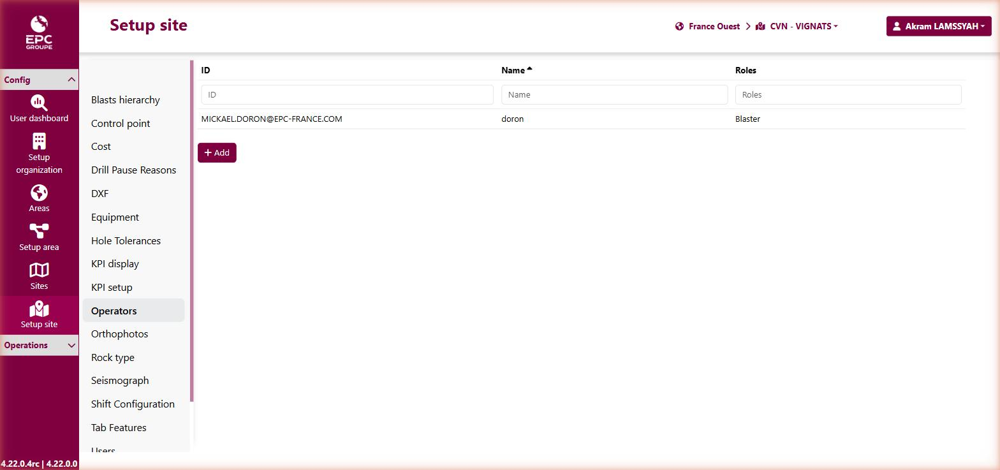
Orthophotos (Aerial Imagery)
Upload and manage orthophotos (aerial images) for the site. Orthophotos provide a geo-referenced photographic background layer on the interactive map.
To manage orthophotos:
- Click Add Orthophoto to upload a new image (supported formats: TIFF, GeoTIFF).
- Uploaded orthophotos appear in a list with preview thumbnail, name, and creation date.
- Use the up/down arrows to change the display order (layering priority on the map).
- Toggle the visibility checkbox to show or hide a layer.
- Click the delete button to remove an orthophoto.
You can also initialize orthophotos from MapBox satellite imagery using the Bootstrap option.
Rock Type
Define the rock types present on this site. Each rock type includes physical properties used for blast design optimization:
| Property | Unit |
|---|---|
| Name | --- |
| Compressive Strength | MPa |
| Young's Modulus | GPa |
| Shear Modulus | GPa |
| Theoretical Speed | m/s |
| Poisson Ratio | --- |
| RQD | % |
| Density | kg/m³ |
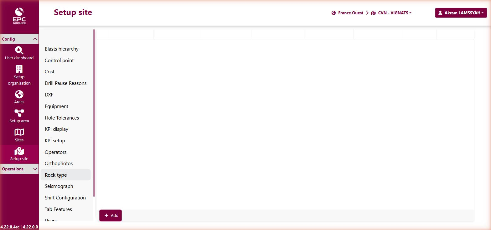
Seismograph
Configure the locations of seismograph (vibration monitoring) instruments on the site. Each seismograph control point has a name and GPS coordinates. These points are used to associate vibration records with specific monitoring locations.
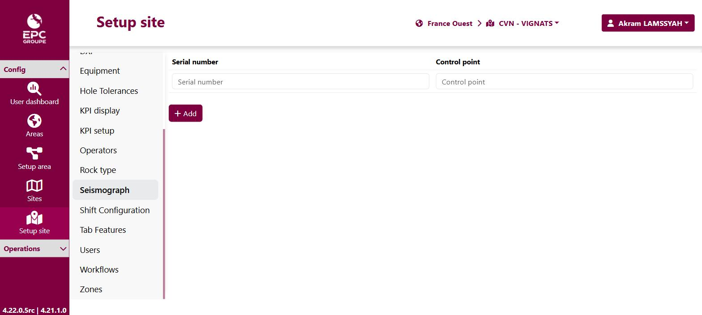
Shift Configuration
Define the shift structure for the site. Select the number of Shifts per day from the dropdown. Available options include 2 × 12h and 3 × 8h.
Then specify the First shift start hour (0–23). The system automatically calculates the start time for each subsequent shift. A table displays each shift with its number, editable Label (e.g., "Morning", "Day", "Night"), and calculated Start time.
Click Confirm to apply the shift configuration.
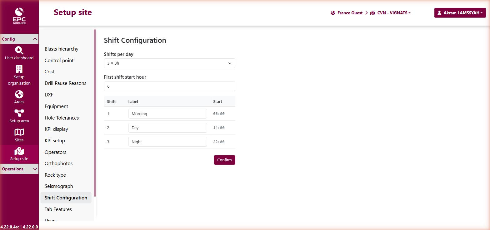
Tab Features
Toggle site-specific feature tabs on or off. Tab Features allow administrators to enable or disable specific functionality tabs for this site, controlling which features are available to users. Available feature toggles include: Blast Design, Blast Load, 3D Viewer, Deliveries, Vibrations, Fragmentation, Load & Haul, Fleet Management System, and Environment.
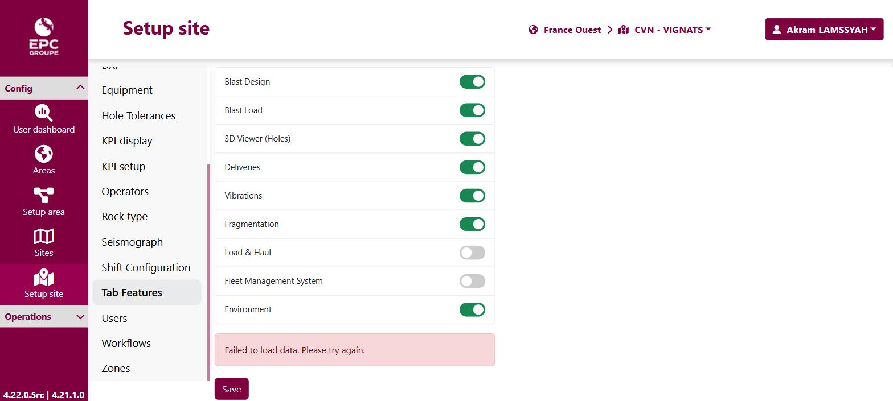
Users
Manage which users have access to this specific site. The users table displays the following columns:
| Column | Description |
|---|---|
| Active | Status indicator (green = active, red = inactive) |
| User name | User login name (email address) |
| First name | User's first name |
| Last Name | User's last name |
| Email address | |
| Email Verified | Whether the email has been verified |
Click + Add to add a user to this site. Use the Delete button to remove a user's access.
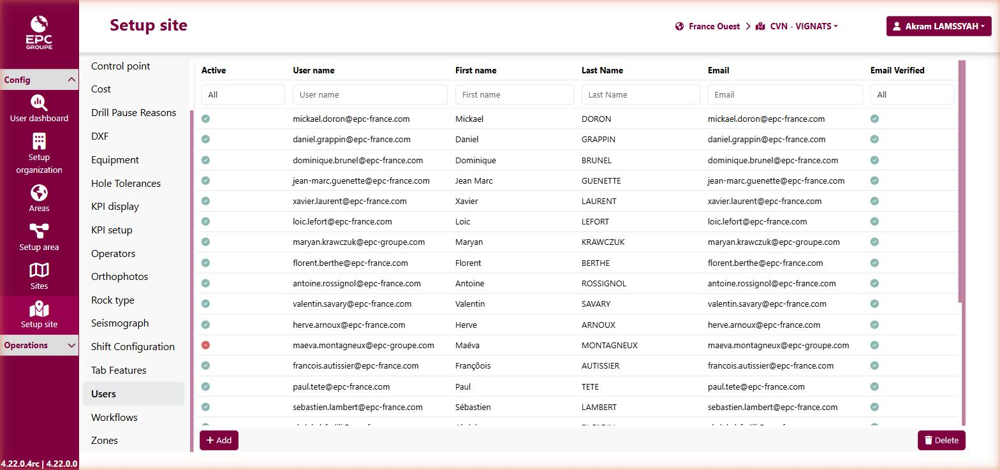
Workflows
Assign and configure workflow templates for this site. Workflows define the approval process for blasts and other operational activities. See Chapter 12 for detailed workflow management.
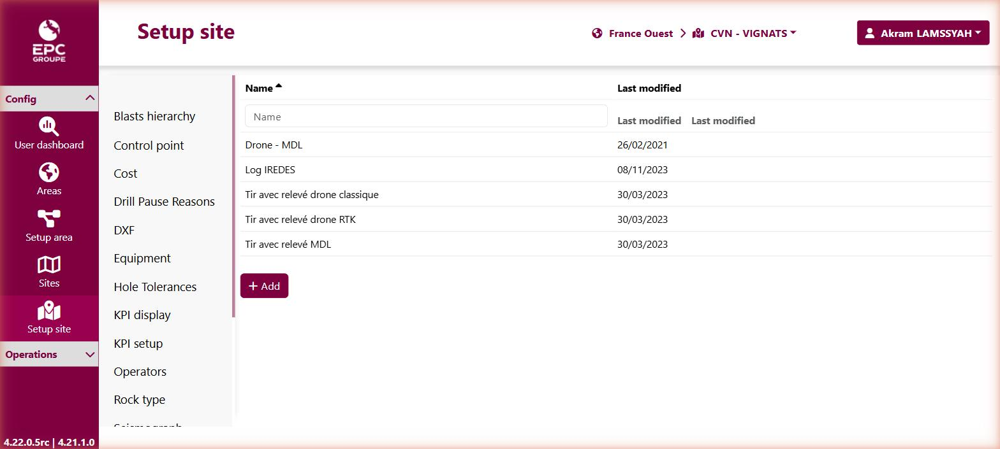
Zones
Create and manage operational zones within the site. A zone represents a defined area (e.g., a pit, a bench level, or a working face). The zones table displays the following columns:
| Column | Description |
|---|---|
| Name | Zone name (e.g., P1, P2, P3) |
| Active | Status indicator |
| Burden (M) | Burden distance in meters |
| Spacing (M) | Spacing distance in meters |
| Min. burden (M) | Minimum burden in meters |
| Diameter (mm) | Drill hole diameter in millimeters |
| Inclination (°) | Default inclination angle in degrees |
| Subdrill (m) | Subdrill depth in meters |
A form at the top allows you to add new zones with the fields above, plus an Active toggle. Zones are used to organize blasts and drilling activities, and their default parameters serve as templates when creating new blast patterns.
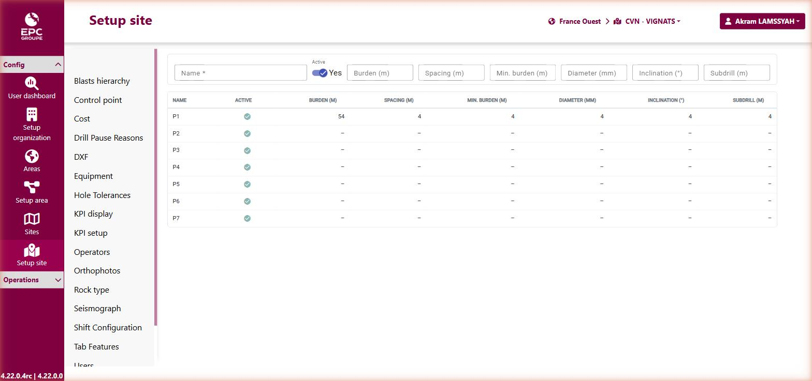
5. Projects
5.1 My Projects List
Navigate to Operations > Projects in the left sidebar to view the list of projects for the current site. The list displays the following columns:
| Column | Description |
|---|---|
| Name | Project name |
| Is Finished | Checkbox indicating whether the project is complete |
| Planned Start Date | Expected project start date |
| Planned End Date | Expected project end date |
| Actual Start Date | Real start date |
| Actual End Date | Real end date |
By default, the list filters out finished projects and sorts by name in ascending order.
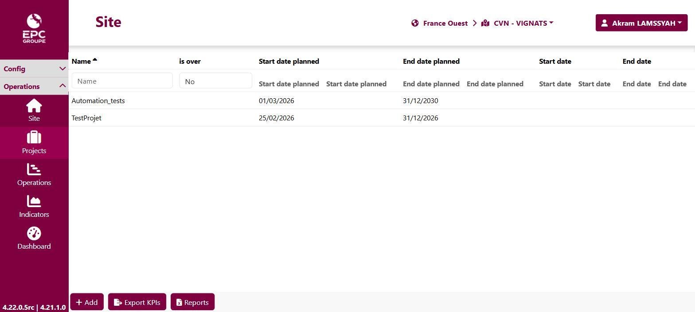
5.2 Creating and Editing a Project
Requires the create_project role.
To create a new project, click the Add button (+ icon) at the bottom of the projects list. Fill in the project name, planned dates, and other required fields, then save.
Note: A workflow must be configured for the site before projects can be created. If no workflow is available, a message "No workflow" is displayed.
5.3 Viewing Project Details
Click on a project in the list to open its detail view. The project detail page is divided into two panels:
- Left panel — A tree view listing all blasts (tirs) within the project, organized hierarchically. Click on a blast to view its details in the right panel.
- Right panel — Displays the selected content: project overview, blast details, or node information.
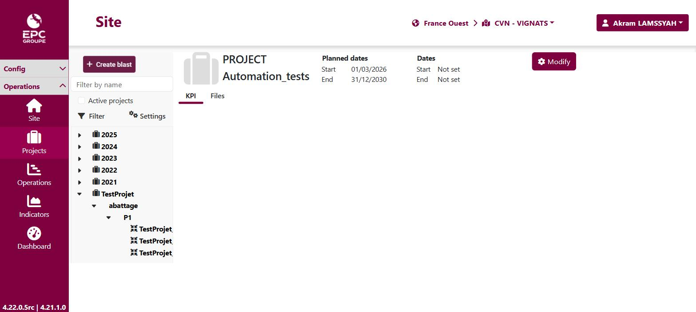
5.4 Analysis Data and CSV Export
From the projects list, two export options are available:
- Export analysis data — Generates a CSV file containing all analysis/KPI data for selected projects within a specified date range.
-
Reports — Generates Excel reports from predefined templates:
-
Deliveries Log Report — A record of all explosive deliveries with optional filtering by delivery and a resume mode.
-
Feedback Report — A compilation of customer and supplier survey responses filtered by blast.
Select the report type, choose the projects, set the date range and time window, then click Download.
6. Blasts — Planning and Execution
Blasts (called "tirs" in French) are the core operational unit in Explore. A blast represents a planned and executed detonation event on a mining site.
Each blast is accessed via the project tree and has the following tabs: General, KPI, Design, Load, Holes, Deliveries, Vibrations, Fragmentation, Environment, and Drilling.
6.1 My Blasts List
Navigate to Operations > Projects, then select a project and click on the Blasts view, or access blasts directly via the project tree view. The blasts list displays:
| Column | Description |
|---|---|
| Name | Blast name |
| Is Executed | Checkbox indicating whether the blast has been detonated |
| Project | Parent project name |
| Zone | Zone where the blast is located |
| Planned Blast Date | Scheduled detonation date |
| Actual Blast Date | Real detonation date (filled after execution) |
By default, the list shows only non-executed blasts, sorted by project name.
6.2 Creating a New Blast
To create a new blast, navigate to the project tree view and use the blast creation function. Provide the blast name, zone, planned date, and blast type. The blast is created in a draft state.
6.3 Blast Design
The Design tab is where the blast pattern is planned. The interface is divided into three panels:
Left panel — Quality data
A collapsible panel displaying quality metrics for the blast pattern. You can filter the view by:
- State — Filter holes by their current status (actual, drilled, loaded, etc.)
- Quality — Color-code holes by quality metrics with percentage values
- Dates — Filter holes by drilling date (Day 1, Day 2, etc.)
Center panel — Map view
An interactive 2D map displaying the blast pattern layout. Holes are shown as points on the map, color-coded according to the selected filter. A status chart summarizes hole states visually.
Right panel — Holes list
A searchable table listing all holes in the blast pattern. Features include:
- Search field to filter holes by name
- Add Hole button to manually add a new hole to the pattern
- Column settings button to toggle which columns are visible
- Click on a row to select and highlight the hole on the map
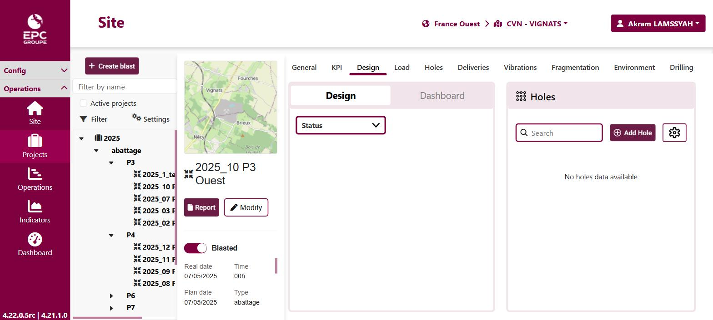
Hole Positioning (Pattern)
Each hole in the blast pattern is defined by its planned position (X, Y coordinates or GPS), which determines its location on the bench. Holes can be added manually or imported from Expertab after field survey.
Geometric Parameters
Each blast hole has the following geometric properties:
| Parameter | Unit | Description |
|---|---|---|
| Depth | m | Planned depth of the hole |
| Azimuth | ° | Horizontal angle from north |
| Inclination | ° | Vertical angle from horizontal |
| Diameter | mm | Drill hole diameter |
Blast Polygons
Blast polygons define the geographic outline of the blast area. From the map view, you can create polygons of different types:
- Drilled — Outline of the area that has been drilled
- Muckpile — Outline of the resulting muckpile after detonation
- Danger Zone — Safety exclusion perimeter
To create a polygon, click the polygon tool on the map, select the blast and polygon type, then draw the boundary.
6.4 Blast Loading
The Load tab manages the explosive charges assigned to each hole. The interface follows the same three-panel layout as the Design tab.
Filters
In addition to State, Quality, and Date filters, the loading view adds a Delivery filter, allowing you to color-code holes by which delivery provided their explosive materials.
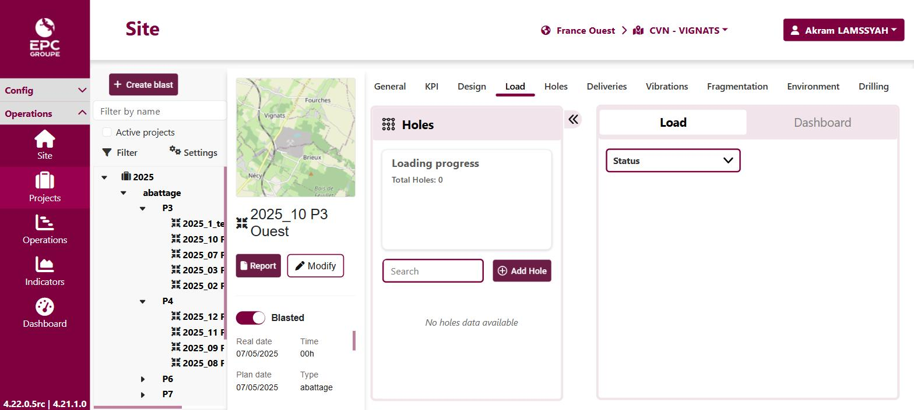
Hole Charge Details
Select a hole to view its charge profile. The Hole Charge view displays a vertical bar visualization of the hole, showing:
- Mine Type — The charge configuration type
- Total weight (kg) — Sum of all explosive products in the hole
- Tube length (m) — Total length of the hole
- Charge segments — Stacked colored blocks representing each product, with product name, length, and proportion
Explosive Product Assignment
Products (bulk explosives, cartridges, detonators, detonating cord) are assigned to holes during the loading process. This can be done per-hole or in bulk via delivery records synced from Expertab.
6.5 Blast Environment
The Environment tab displays CO2 emission data for the blast, organized into four categories:
- Transport — CO2 from moving explosive materials from factory to storage to site. Displayed per factory/storage route in kg.
- Drilling — CO2 generated during the drilling phase, by drill type. Shows drilled meters, CO2 per meter, and total.
- Detonation — CO2 from the explosive detonation itself, by product. Shows quantity, CO2 per unit, and total.
- Production — CO2 from manufacturing the explosive products. Shows quantity, CO2 per unit, and total.
A donut chart on the left summarizes total CO2 (in kg) with a percentage breakdown by category.
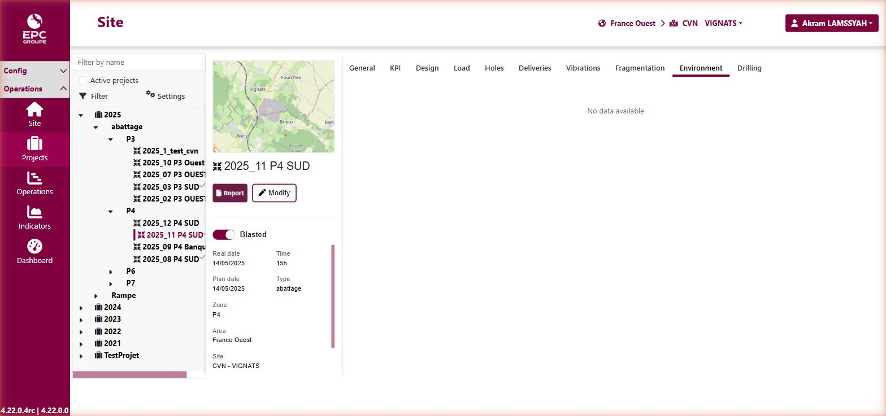
6.6 3D Blast Visualization
The Holes tab provides a 3D view of the blast pattern using a WebGL canvas. Features include:
- 3D rendering of all drill holes with depth, inclination, and charge visualization
- Add Holes — Import hole data from files
- Add OBJ — Load 3D terrain models (.obj, .mtl, textures) to visualize holes in context with the topography. Supports drag-and-drop.
- Save Terrain — Save the loaded terrain model for future use
- Export — Export the 3D view
Interactive information panels:
- Click on a charge to see: product name, depth (m), hole name, length (m), quantity (kg or units)
- Click on a discontinuity to see: from/to depth (m), interval, name, and associated hole
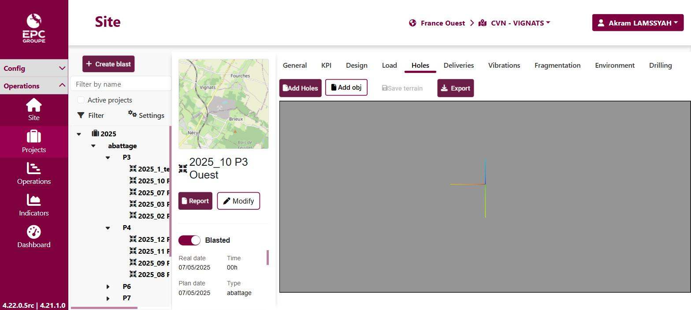
6.7 Copying an Existing Blast
To copy a blast, open the blast you want to duplicate and use the Copy function. This creates a new blast with the same hole pattern, geometry, and design parameters. You can then modify the copy as needed. This is useful when designing similar blasts on adjacent benches.
6.8 Fragmentation Analysis
The Fragmentation tab allows analysis of the rock size distribution after a blast has been executed.
Chart controls:
- Fragmentation Distribution toggle — Shows the size distribution histogram
- Fragmentation Cumulative Percentage toggle — Shows the cumulative percentage curve
- Y-axis displays Percentage
Interval analysis:
- Enter Min and Max values (in mm) to calculate the percentage of material within that size range
Diameter sizes (D1, D2, D3):
- Enter a percentage (0–100%) to find the corresponding diameter. For example, D2 at 50% gives the median fragment size (D50).
Muckpile image:
- View the post-blast muckpile photograph used for fragmentation analysis. Click the image to enlarge.
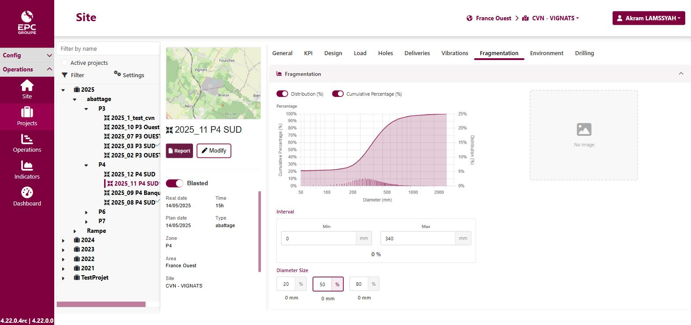
6.9 Blast KPI and Analysis Data
The KPI tab displays key performance metrics for the blast. Each KPI is shown with its Name (and description), Type category, and Final value. KPIs are grouped by type (e.g., D&B Design, Financials, Blast performance, Safety & environment). Click the edit icon to enter or modify a value, or click Details to view the full history and configuration of a specific KPI.
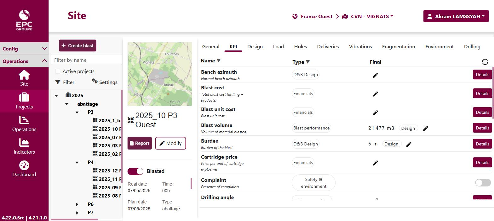
6.10 Blast General Information
The General tab is divided into two panels:
- Progress — Shows the workflow history for this blast. When no workflow history is available, the message "No history data available" is displayed.
- Document Storage — Organizes blast-related documents into numbered categories (e.g., 01 - Photos, 02 - OBJ, 03 - EXT, 04 - Documents de tir). Each category has an access level dropdown and a file count. Click Download All to download all documents at once.
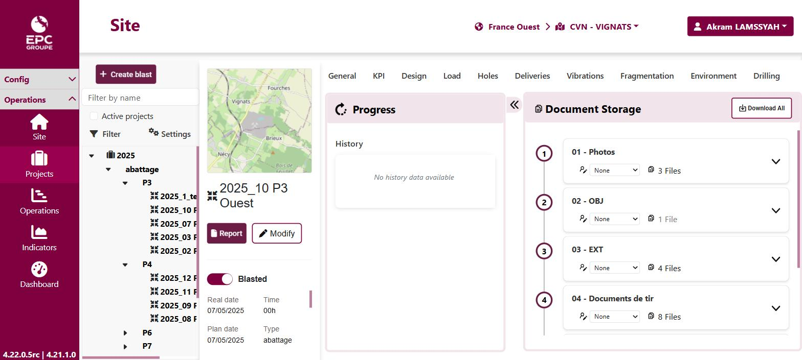
6.11 Blast Drilling
The Drilling tab tracks all drill sessions associated with the blast. It displays total drilled length, engine hours, and drilling rate metrics.
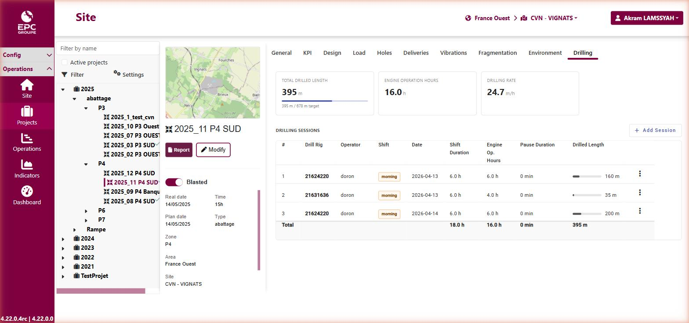
6.12 Blast Deliveries
The Deliveries tab lists all explosive material deliveries for this blast, including delivery dates, quantities, and personnel involved.
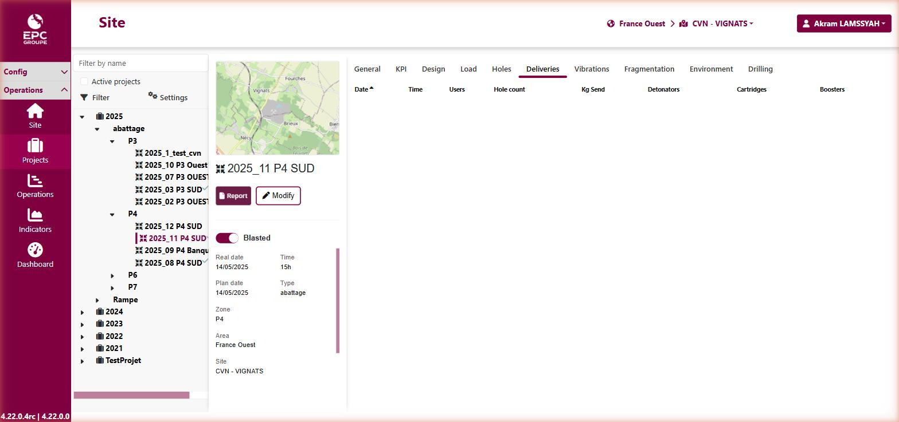
6.13 Blast Vibrations
The Vibrations tab displays vibration monitoring records captured during or after the blast execution.
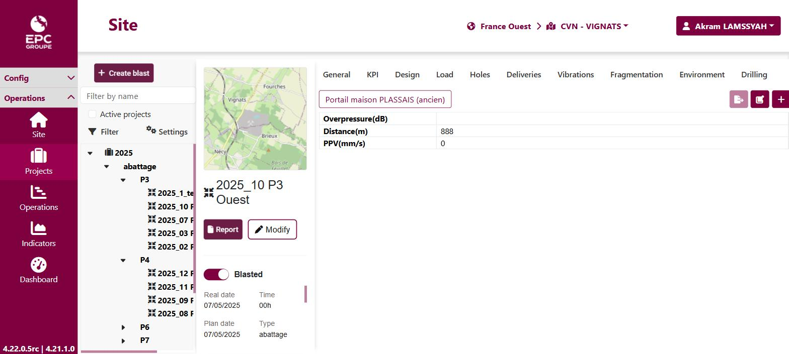
6.14 Post-Blast Status
Once a blast has been detonated, its status is updated to Blasted using the toggle switch on the blast information card. Once marked as blasted, additional fields become available:
- Actual date and time of detonation
- Planned date (for comparison)
- Blast type
The blast information card also displays: zone, region, site, and project context. Use the Create Report button to generate a blast report, or the Edit button to modify blast details.
7. Drilling Operations
7.1 Drill Sessions — Overview
Drill sessions are recorded periods of drilling activity on a site. Each session captures the drill rig used, operator, shift, date, duration, and drilled length. Sessions are associated with a blast and provide the actual drilling data to compare against the planned design.
Access drill sessions from the Drilling tab within a blast detail view.
Summary KPIs are displayed at the top of the drilling panel:
| KPI | Unit | Description |
|---|---|---|
| Total Drilled Length | m | Actual meters drilled vs. target, with progress bar |
| Engine Operation Hours | h | Total engine running time |
| Drilling Rate | m/h | Average drilling speed |
7.2 Drill Activity Chart
Navigate to Operations > Operations in the left sidebar, then select Drill Activity Chart from the sub-menu. This page displays a Gantt-style chart showing drilling activity over time:
- Horizontal axis: time (navigable by date)
- Rows: drill rigs and operators
- Bars: individual drill sessions with start/end times
You can adjust the time scale and date range. Click on a blast or session in the chart to navigate to its detail page.
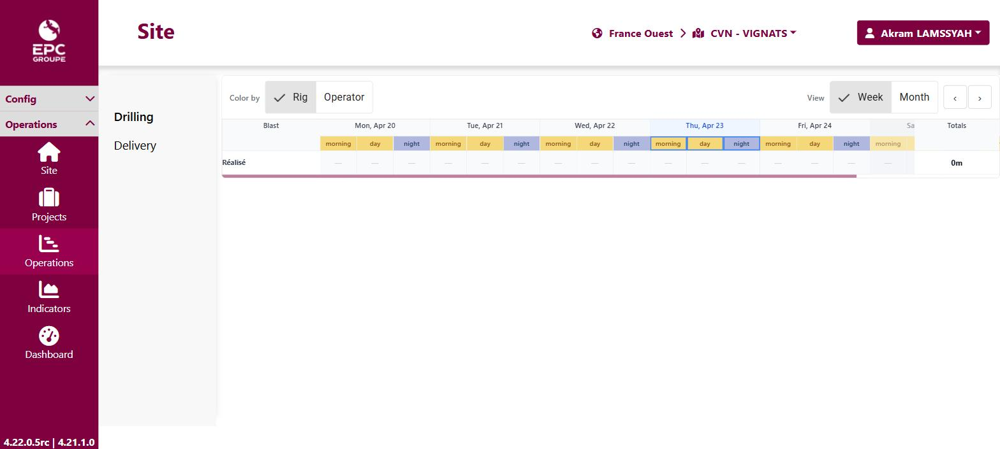
7.3 Drill Session Details
Each drill session record shows:
| Field | Description |
|---|---|
| Drill Rig | Equipment used for drilling |
| Operator | Name of the drill operator |
| Shift | Shift label (with visual indicator) |
| Date | Session date |
| Shift Duration | Total shift time (hours) |
| Engine Op. Hours | Actual engine operation time (hours) |
| Pause Duration | Total pause time (hours) |
| Drilled Length | Meters drilled with progress bar vs. target |
The table footer displays totals for all numeric columns.
To add a new session, click the Add Session button. To edit an existing session, click the menu icon (⋮) on its row and select Edit.
When no sessions have been recorded yet, a placeholder message is displayed: "No drilling sessions recorded yet" with an Add Session button.
7.4 Pause Management and Stop Reasons
During drilling, operators can record pauses with associated reasons. Pause reasons are predefined in the site configuration (see Drill Pause Reasons). The total pause duration is calculated and displayed for each drill session. This data feeds into KPI calculations for equipment utilization and operational efficiency.
7.5 Drill Reports
Drill reports can be generated from the projects page. Select the Reports option and choose the appropriate report template. Reports are generated as Excel files and include drill session data, hole progress, and operational metrics for the selected time period.
7.6 Synchronization with Expertab (Field Tablet)
Expertab is the companion tablet application used by drill operators in the field. It provides:
- Display of the blast pattern and hole locations
- GPS-guided navigation to each hole position
- Real-time recording of drill session data (depth, timestamps, pauses)
- Geological observation entry per depth interval
- Delivery record capture
Synchronization behavior:
- Expertab operates in offline-first mode — data is captured locally even without connectivity.
- When the tablet connects to the network, it syncs all captured data to the Explore server.
- The sync protocol handles duplicates idempotently, so repeated syncs are safe.
- Blast patterns only appear on Expertab when they are in an Approved status.
- Synced data (drill sessions, geology logs, deliveries) appears in Explore after successful synchronization.
8. Deliveries and Logistics
8.1 Explosive Delivery Tracking
The Deliveries tab within a blast detail view shows all explosive material deliveries associated with that blast. Each delivery record includes:
| Column | Description |
|---|---|
| Date | Delivery date |
| Start / End Time | Delivery time window |
| Blaster | Person responsible for the delivery |
| Operators | Personnel involved |
| Hole Count | Number of holes loaded |
| KG Sent | Total explosive weight delivered (kg) |
| Detonators | Number of detonators delivered |
| Cartridges | Number of cartridges delivered |
| Boosters | Number of boosters delivered |
Click the Modify button on a delivery to open the delivery modal, which has two tabs:
- Delivery tab — Edit delivery details, move, merge, or update the delivery record.
- Holes tab — View and manage the holes loaded in this delivery. Options include splitting a delivery or updating hole-level data.
8.2 Delivery Activity Chart
Navigate to Operations > Operations in the left sidebar, then select Delivery Activity Chart from the sub-menu. This chart displays delivery activity over time in a timeline format, similar to the drill activity chart.
Features include:
- Time-based navigation (date range, time scale)
- Shift-based filtering
- Click on a row to navigate to the associated blast
- Click on a delivery to view its details
- Generate delivery report button with selection summary showing the number of shifts and deliveries selected
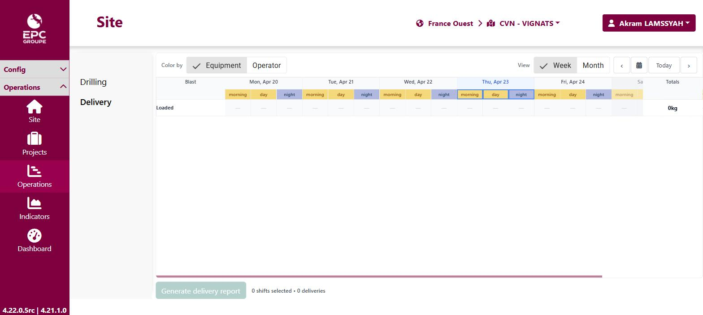
9. Geology
Geological data in Explore captures rock composition and quality information observed during drilling. This data is used for mine planning, resource estimation, and blast design optimization.
9.1 Drill Logs
Drill logs record discontinuity types encountered during drilling. The drill log management interface (accessible via site or region setup) displays a table with:
| Column | Description |
|---|---|
| ID | Unique identifier (read-only) |
| Name | Discontinuity type name |
| Short Name | Abbreviated code |
| Color | Display color (with color picker) |
You can add, edit, or delete drill log entries. The name and short name fields are required.
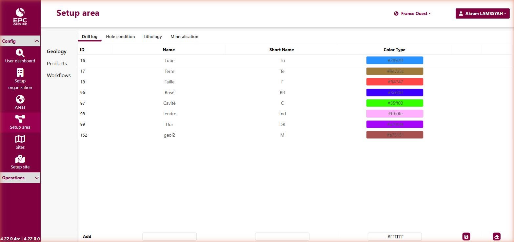
9.2 Lithology — Data Entry and Viewing
Lithology defines the rock type classifications used on a site or region. The lithology management interface displays:
| Column | Description |
|---|---|
| ID | Unique identifier |
| Name | Rock type name |
| Code | Numeric classification code |
| Rock Type | Parent rock type category |
| Description | Detailed description |
| Color | Display color (with color picker) |
All fields except ID are required when creating a new entry. Lithology data is captured by operators during drilling via Expertab or entered manually through the Explore web interface.
9.3 Mineralization
Mineralization records describe ore-bearing mineral characteristics encountered during drilling. The management interface allows creating entries with:
| Field | Required |
|---|---|
| Name | Yes |
| Short Name | Yes |
Mineralization data is linked to specific depth intervals within drill holes.
9.4 Hole Conditions
Hole conditions describe the physical state of a drill hole. The management interface displays:
| Column | Description |
|---|---|
| ID | Unique identifier |
| Short Name | Abbreviated condition code |
| Description | Full condition description |
Common hole conditions include intact, collapsed, partially collapsed, water-filled, or abandoned.
9.5 Rock Types
Rock types are configured at the site level (see Rock Type) with physical properties including compressive strength, Young's modulus, shear modulus, theoretical speed, Poisson ratio, RQD, and density. These properties are used in blast design calculations.
9.6 Assay Data
Assay data records the chemical composition of rock samples taken at specific depth intervals during drilling. This information is used for ore-grade estimation and mine planning. Assay results are typically captured through geological logging and synced from field data collection tools.
10. Vibration Monitoring
10.1 Seismograph Control Points
Seismograph control points are the physical locations where vibration monitoring instruments are placed. These are configured in the site setup (see Seismograph) and serve as reference points for assigning vibration records.
10.2 Recording and Viewing Vibrations
The Vibrations tab within a blast detail view displays all vibration records associated with that blast. Records can be filtered by:
- Assigned Records — Records already linked to a control point
- Unassigned Records — Records not yet assigned
- All — Both assigned and unassigned
The list is paginated with navigation controls (First, Previous, page numbers, Next, Last) and displays the total record count.
Each record shows a summary with vibration measurements across three axes:
| Channel | Axis | Description |
|---|---|---|
| V | Vertical | Vertical ground velocity |
| L | Longitudinal | Longitudinal ground velocity |
| T | Transverse | Transverse ground velocity |
| VS | Vector Sum | Combined vector magnitude |
Additional measurements include Air Overpressure (in Pa and dB(L)).
10.3 Vibration Charts
Select a vibration record to view its detailed charts. Three chart types are available via tabs:
Signal tab
Displays the raw vibration waveform for each channel (Channel 1, 2, 3), showing the transducer type, axis orientation, and raw peak value in mm/s or Pa.
Frequency tab
Displays the FFT (Fast Fourier Transform) analysis for each channel, showing the frequency spectrum with peak frequency values in Hz.
Standard tab
Displays weighted vibration values according to a selectable weighting standard. Shows the PPV Max (Peak Particle Velocity maximum) in mm/s for each channel.
10.4 Assigning Records to a Blast
Vibration records from seismographs can be assigned to specific blasts. From the vibration detail page:
- Select one or more unassigned records.
- Click the Multi-assignment button or assign individually to a control point.
- The record is then linked to the blast and its distance to the blast can be recorded.
10.5 Record Details
The full record detail view displays:
| Field | Description |
|---|---|
| Date and Time | Timestamp of the recording |
| V / L / T / VS | Peak velocities per axis (mm/s) |
| Air Overpressure | Pa and dB(L) |
| PPV Max | Maximum peak particle velocity (mm/s) |
| Distance | Distance from blast to monitoring point (m) — editable |
| Frequency | Dominant frequency (Hz) |
| Device | Seismograph identifier |
| Control Point | Assigned monitoring location |
| Notes | Three editable note fields |
Available actions:
- Edit Distance — Update the blast-to-sensor distance
- Edit Notes — Add or modify up to three notes
- View in VibraData — Open the record in the external VibraData tool
- Download File — Download the raw vibration data file (if available)
- Delete Record — Remove the record
11. Products and Suppliers
This chapter covers the management of explosive products and their suppliers. Products are configured at the regional level and made available to sites within that region.
11.1 Products Dashboard
Navigate to the Products section (via region setup or site setup). The dashboard is divided into two panels:
- Left panel — Providers: A searchable list of suppliers with select-all checkbox, add (+), edit, and delete actions.
- Right panel — Products: A list of products filtered by type, with add (+), edit, and delete actions.
Use the Type selector dropdown to switch between product categories: Explosives, Detonators, or Detcords.
A Copy to Region feature at the bottom allows copying the current product configuration to another region.
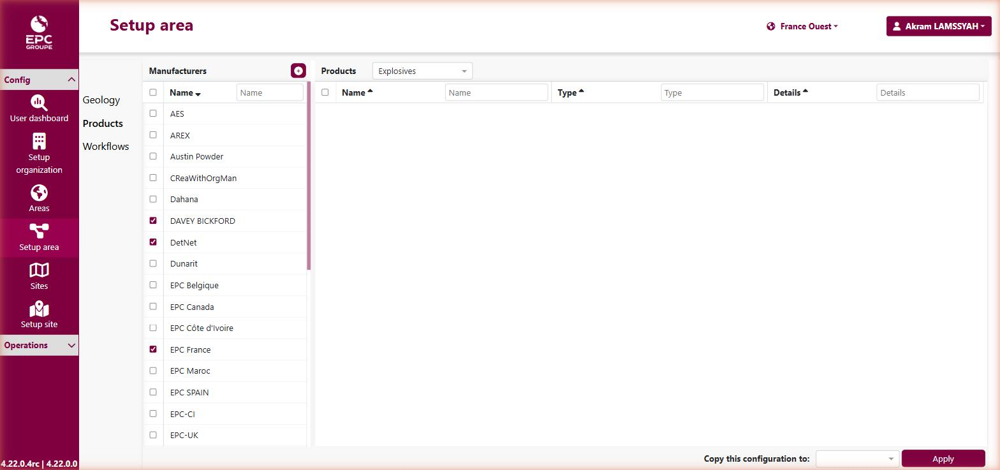
11.2 Explosives Management (Bulk, Cartridges)
When adding or editing an explosive, select the type:
Bulk Explosives
| Field | Description |
|---|---|
| Product Type | Usage type (from dropdown) |
| Explosive ID | Select existing or create new |
| Properties | Via explosive form sub-component |
Cartridges
| Field | Description |
|---|---|
| Diameter | Cartridge diameter (mm) |
| Weight | Cartridge weight (g) |
| Explosive ID | Select existing or create new |
| Properties | Via explosive form sub-component |
11.3 Detonator Management
| Field | Required | Description |
|---|---|---|
| Commercial Name | Yes | Brand/commercial name (max 50 characters) |
| Name | Yes | Internal reference name (max 50 characters) |
| Length | Yes | Detonator length |
| Type | Yes | Detonator type (from dropdown) |
| Delay | Yes | Delay time in milliseconds |
| Provider | Yes | Supplier (from dropdown) |
| GES Fields | --- | Greenhouse gas emission data |
11.4 Detonating Cord Management
| Field | Required | Description |
|---|---|---|
| Name | Yes | Cord name (max 50 characters) |
| Linear Weight | Yes | Weight per linear meter |
| Provider | Yes | Supplier (from dropdown) |
| GES Fields | --- | Greenhouse gas emission data |
11.5 Supplier Management
Requires the Provider Editor role.
To manage suppliers, use the Providers panel on the left side of the products dashboard.
| Field | Required | Description |
|---|---|---|
| Name | Yes | Supplier name (max 50 characters) |
| Code | Yes | Short code, uppercase (max 5 characters) |
Actions available: create, edit, delete suppliers, and apply settings to one or multiple suppliers.
11.6 Product Sources (Factories and Warehouses)
Navigate to Setup Organization to manage product sources — the physical locations where explosive products are manufactured and stored.
The interface has two tabs: Warehouses and Factory, each showing a searchable list with a map view.
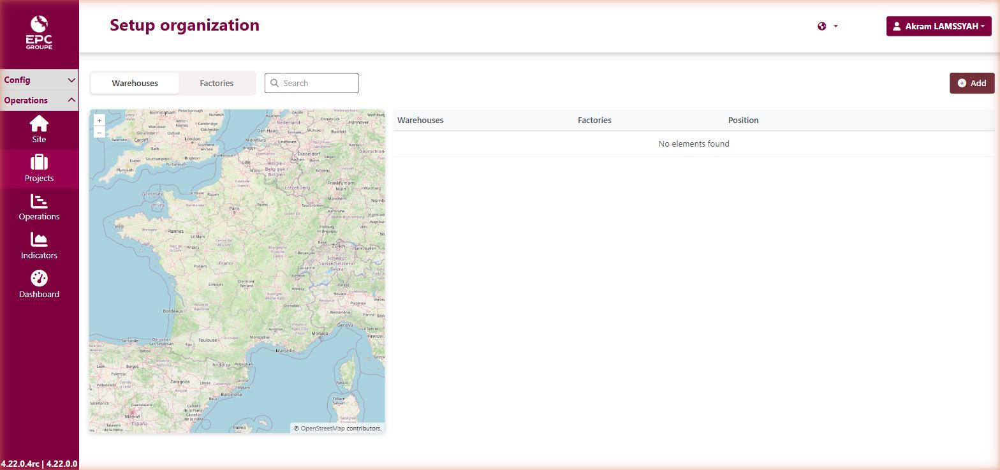
Factories
| Field | Required | Description |
|---|---|---|
| Name | Yes | Factory name (max 256 characters) |
| Latitude | Yes | GPS latitude (-90 to 90, 4 decimals) |
| Longitude | Yes | GPS longitude (-180 to 180, 4 decimals) |
| Is Active | --- | Active/inactive toggle (edit mode only) |
Warehouses
| Field | Required | Description |
|---|---|---|
| Name | Yes | Warehouse name (max 256 characters) |
| Factory | Yes | Parent factory (from dropdown) |
| Latitude | Yes | GPS latitude (4 decimals) |
| Longitude | Yes | GPS longitude (4 decimals) |
| CO2 per KM | --- | CO2 emission factor per kilometer (4 decimals) |
| Is Active | --- | Active/inactive toggle (edit mode only) |
Factory and warehouse locations are displayed on the map and used in CO2 transport calculations (see Blast Environment).
12. Workflows and Approvals
12.1 Workflow Principles in Explore
Workflows in Explore define the approval process that blasts and other operational objects must follow before execution. A workflow is a sequence of steps, each with conditions, validators, and document requirements. Workflows ensure that every blast goes through the proper review and authorization process before detonation.
12.2 Creating and Configuring a Workflow Template
Workflow templates can be managed at two levels:
- Site level — Navigate to site setup > Workflow Templates
- Region level — Navigate to region setup > Workflows
The workflow template list displays all available templates sorted by name. Click on a template to edit it, or use the Add button to create a new one.
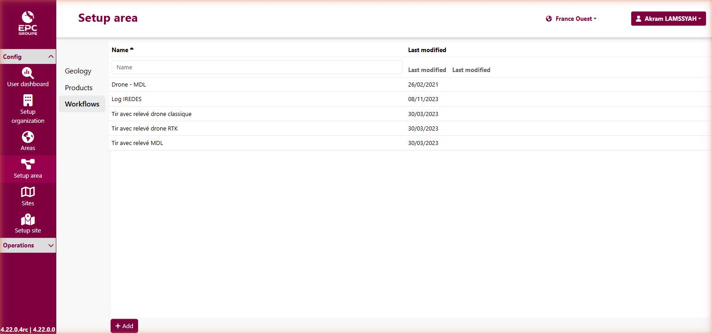
12.3 Steps, Conditions, and Validators
Each workflow template consists of ordered steps. For each step, you can define:
- Step name — A descriptive label for the approval stage
- Conditions — Requirements that must be met before the step can be completed
- Validators — Users or roles authorized to approve the step
- Transitions — Rules governing progression to the next step
12.4 Tracking Workflow Progress
When a blast is associated with a workflow, its progress through the steps is visible in the blast detail view. Each step shows its current status (pending, in progress, approved, rejected) and any associated documents.
12.5 Document Management per Step
Each workflow step can have associated documents. The file explorer component allows:
- Go to Root / Go to Parent — Navigate the folder structure
- Add Files — Upload documents (PDF, images, etc.)
- Create Folder — Organize documents into folders
- Rename — Rename files or folders
- Download — Download selected items
- Cut / Paste — Move items between folders
- Delete — Remove selected items
- Select All — Select all items in current folder
- Sort — Toggle alphabetical sort order
The file table shows: file name, extension, size (MB), and creation date. Folders are listed first, followed by files. A footer displays information about the selected items (count, total size).
13. Mapping and Visualization
13.1 Interactive Map (MapBox)
The interactive map is the central visualization tool in Explore. Powered by MapBox, it provides a geospatial view of the mining site with multiple layers and interactive elements.
Map view modes (top-right buttons):
- Map — Standard map view
- Plan — Simplified plan view
- 3D — Three-dimensional view (when available)
Map tools (right side):
- Ruler — Measure distances between points on the map
- Polygon — Draw polygons for blast areas, muckpiles, or danger zones
Scale bar — Displayed at the bottom right, showing the current scale (e.g., "100 m").
13.2 Displaying Drill Holes and Blast Patterns
Drill holes appear as points on the map, positioned according to their GPS coordinates. Holes can be visualized in two modes (via the Holes Legend panel):
State mode
Color-code holes by their current status: actual position, planned, drilled, loaded, fired, etc. Select a specific status to highlight only those holes.
Feature mode
Color-code holes by a specific feature: all holes, water presence, tube condition, or deviation.
Hole popup — Click on a hole to see:
- Hole name, planned depth (m), measured depth (m), diameter (mm)
- Loading information (bulk kg, cartridge count)
- Status indicator
- Links to details and polygon creation
Blast popup — Click on a blast to see:
- Blast name, planned/effective dates, zone, level
- KPI value
- Links to blast details and polygon management
13.3 Terrain Layers and Orthophotos
Orthophotos (aerial imagery) are displayed as background layers on the map. Use the Orthophoto panel (bottom-right button) to:
- View all uploaded orthophoto layers
- Reorder layers (up/down arrows)
- Toggle visibility for each layer
- Add new orthophotos
- Delete layers
13.4 MapBox Layer Management
Explore uses MapBox for both base map rendering and custom layer management. Terrain layers, geological overlays, and operational data are rendered as MapBox layers. The filter panel (accessible via the filter button) allows toggling visibility of:
- Holes
- Automatic polygons
- Drilled polygons
- Muckpile polygons
- Danger zone polygons
- Orthophoto layers
- Control points
Coloring modes can be switched between:
- KPI mode — Color holes by a selected KPI metric, with a gauge showing min/max bounds
- Zones mode — Color areas by zone
13.5 DXF File Import
DXF (AutoCAD Drawing Exchange Format) files can be uploaded via the site setup (see DXF) and overlaid on the map. These files typically contain mine plans, bench layouts, or geological boundaries.
14. Data Analysis and Key Performance Indicators (KPIs)
14.1 Indicator Configuration
Navigate to Operations > Indicators in the left sidebar to configure KPIs for the current site. This page allows you to define which metrics are tracked, their units, target values, and display preferences.
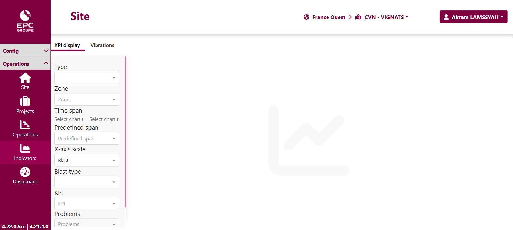
14.2 Analysis Data Entry
Analysis data can be entered at the project or blast level. When an analysis configuration is defined for the site, dedicated data entry fields appear in the blast detail view (the Analysis Data tab). The tab shows a completion indicator (checkmark) when data has been entered.
Data entries include: quantity values, dates, reference measurements, and categorized metrics as defined in the analysis configuration.
14.3 Entry Profiles
KPI entry profiles are predefined templates that group related analysis fields together. Profiles can be selected from the Profiles section to quickly apply a standard set of KPI configurations to a site.
14.4 Metabase Dashboards and Reports
Explore's primary analytics and reporting interface is powered by Metabase, an embedded business intelligence tool. Metabase dashboards are available at multiple levels:
- Site Dashboard — Accessed via the Dashboard page in Operations, or the Dashboard tab on the My Site page. Shows site-specific drilling, blasting, and operational metrics.
- Region Dashboard — Available to regional and organization managers, showing cross-site analytics.
- Client View — Organization-level reporting dashboard.
- Equipment Blast Dashboard — Equipment performance metrics for a specific blast.
- StevinRock Dashboard — Geological analytics and insights.
Dashboards are automatically filtered to your current context (site, region, or organization) and provide interactive charts, tables, and visualizations.
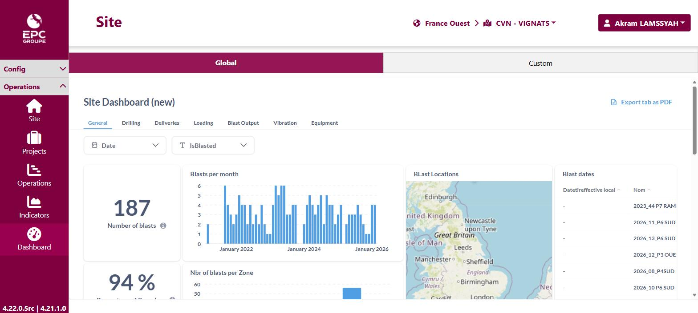
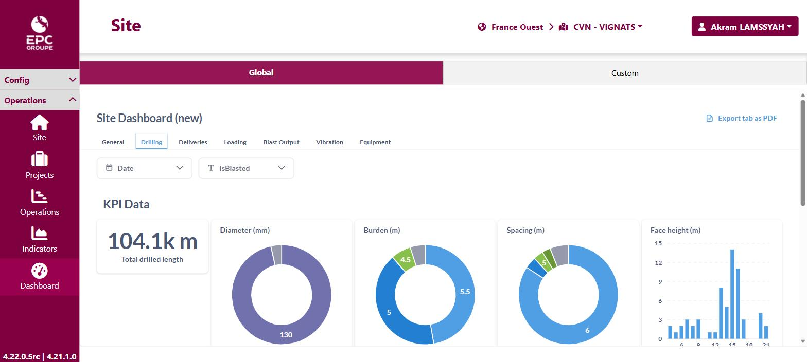
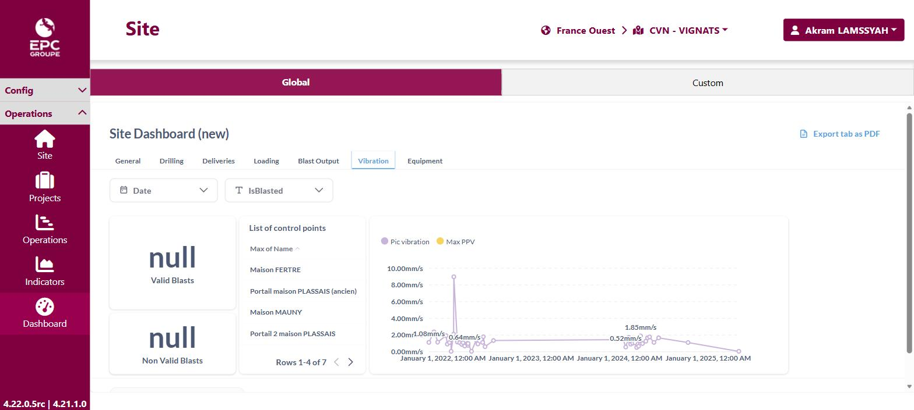
14.5 Vibration Indicators
The Vibrations indicator page displays vibration monitoring data with visualization tools.
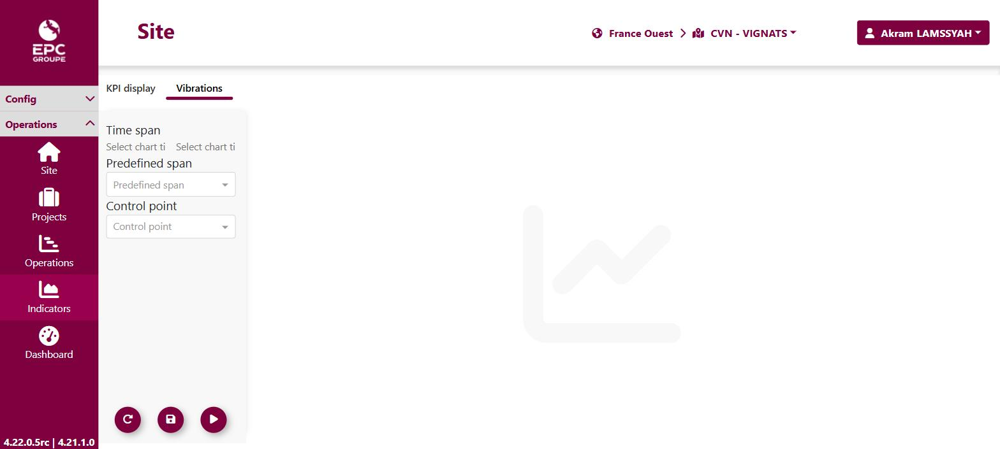
14.6 Operational Tracking Data
Operational tracking data captures day-to-day metrics for monitoring site performance. This data is entered alongside blast and project activities and feeds into KPI calculations and Metabase dashboards.
14.7 Data Export
Analysis data can be exported in multiple formats:
- CSV export — From the projects page, use the Export analysis data button to generate a CSV file with all KPI data for selected projects.
- Excel reports — Generate formatted Excel reports from templates (see Analysis Data and CSV Export).
- Metabase exports — Metabase dashboards support native export of charts and data tables.
15. Equipment and Fleet
15.1 Drilling Equipment Management
Equipment is configured at the site level (see Equipment). Each piece of equipment has a name, type (e.g., drill rig, truck, loader), and optional external identifier for integration with Hiboo.
Equipment records are used to:
- Track which drill rig performed each drill session
- Display equipment positions on the map
- Calculate utilization KPIs
15.2 Equipment Path Tracking
Equipment paths (GPS trajectories) can be viewed on the interactive map. From the map's equipment panel:
- Select a date range using the date picker and navigation arrows.
- Choose a shift from the dropdown.
- Adjust the time slider to filter by hour range.
- Toggle Split route mode to separate routes by stops.
- Toggle Assign mode to link equipment routes to blasts.
The equipment list shows expandable cards grouped by equipment type. Each equipment shows its routes with:
- Color-coded path
- Route date
- Time range (start to end)
- Blast assignment status
- Merge, Zoom, and Unassign actions
Equipment popup — Click on an equipment marker on the map to see:
- Equipment name and display name
- External ID
- Date, time, and GPS coordinates
- Assignment status with options to assign or unassign
15.3 Hiboo Dashboard
For sites with Hiboo integration enabled, the Hiboo tab on the My Site page displays fleet management metrics from the Hiboo platform:
- Equipment utilization — Machine operating hours vs. available hours
- Fuel consumption — Fuel usage per machine
- Machine health — Equipment condition alerts and status
Note: Hiboo data is supplementary. If the Hiboo service is unavailable, core Explore functionality continues to operate normally.
16. Reports and Exports
16.1 Excel Report Generation
Excel reports can be generated from the projects page. Two report templates are available:
Deliveries Log Report
A detailed log of all explosive deliveries for selected projects within a specified time period. Configurable options include:
- Project selection (multi-select)
- Date range with start/end time selection
- Delivery filter (multi-select specific deliveries)
- Resume mode toggle (summary vs. detailed)
Feedback Report
A compilation of customer and supplier survey responses. Filter by:
- Project selection
- Date range
- Blasts with survey responses
Click Download to generate the Excel file.
16.2 Analysis Data Export (CSV)
From the projects list, click Export analysis data to generate a CSV file containing all KPI and analysis entries for the selected projects. The export preparation message "Export preparation…" is displayed while the file is being generated. If no data is available, the message "No data to export" appears.
16.3 Metabase Analytical Dashboards
Metabase provides the richest reporting and analytics capabilities in Explore. See Metabase Dashboards and Reports for details on the available dashboards. Metabase natively supports exporting individual charts and tables to CSV, Excel, or image formats.
17. Satisfaction Surveys
17.1 Customer Feedback (Post-Blast)
The Customer Feedback tab within a blast detail view allows collecting structured feedback from customers about the blast results. The survey form is dynamically generated from configured questions and supports multiple question types:
| Question Type | Description |
|---|---|
| Yes/No Toggle | Binary question with toggle switch |
| 2-Point Scale | Two-option rating scale |
| 3-Point Scale | Three-option rating scale |
| Dropdown | Selection from predefined options |
| Date | Date picker input |
| Number | Numeric value input |
| Free Text | Open text area (with maximum character limit) |
Fill in the responses and click Submit to save the feedback. The submit button is disabled until at least one answer has been modified.
17.2 Supplier Feedback
The Supplier Feedback tab works identically to customer feedback but targets supplier performance evaluation. The same question types are available, and the form is configured separately to capture supplier-specific metrics.
Survey responses are compiled into the Feedback Report (see Excel Report Generation).
18. Administration
This chapter covers features available to users with administrative roles.
18.1 User Management
Requires the manage_user role.
Navigate to Config > Users in the left sidebar to view and manage user accounts. The user list displays all users accessible to your organization.
For each user, you can view and manage:
- User details (name, email)
- Assigned regions — Which regions the user has access to
- Assigned sites — Which sites the user can access
- Groups — Keycloak groups and roles assigned to the user
Use the user detail page to modify assignments and permissions.
18.2 User Dashboard
Requires the manage_site role.
Navigate to Config > User Dashboard to view analytics about user activity and account status. This dashboard provides insights into user engagement, login activity, and license utilization.
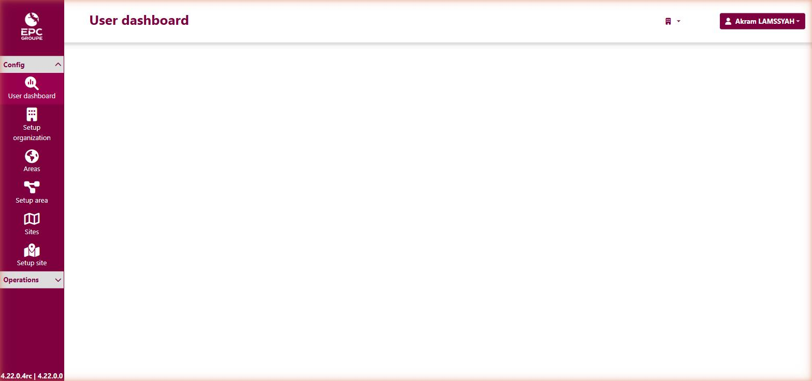
18.3 Region Management
Requires the manage_area role.
Navigate to Config > Areas in the left sidebar to manage regions. A region groups multiple mining sites under a common organizational unit. The list shows all regions you have access to, with options to view detailed information.
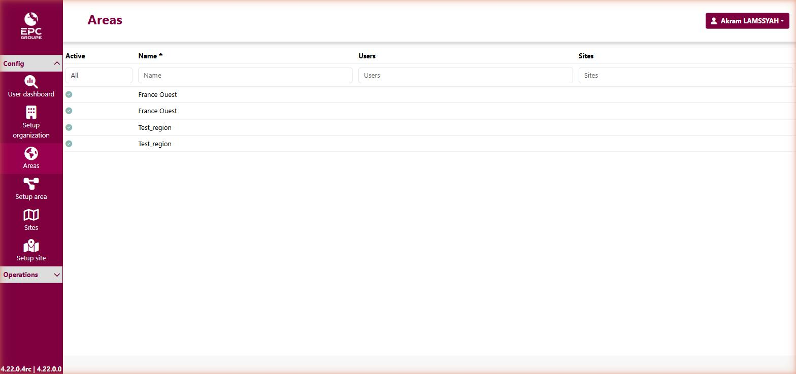
From the region list, you can:
- View all regions (with area manager permissions)
- Access detailed region data (with system admin permissions)
- View regions filtered by your current user access
- View region statistics
18.4 Area Dashboard
Requires the org_manager role.
Navigate to Config > Area Dashboard to view cross-region analytics. This Metabase-powered dashboard provides organization-wide KPIs and metrics, allowing comparison across regions and sites.
18.5 Organization and Company Management
Organizations represent the top-level entities in Explore's multi-tenant architecture. An organization contains regions, which contain sites.
Company management:
- View all accessible companies
- View companies with associated user information
- Create new companies (requires Company Creator role)
- Update company details (requires Area Creator role)
- Delete companies
18.6 Organization Setup (Product Sources)
Requires the manage_site role.
Navigate to Config > Setup Organization to manage organization-wide product sources — factories and warehouses where explosive materials are manufactured and stored. See Product Sources (Factories and Warehouses) for details.
18.7 User Licensing
The platform tracks user licenses to manage access capacity. License information is available through the administration interface.
Appendices
Appendix A — Navigation Shortcuts and Tips
- Click the EPC Group logo in the top-left corner to return to the home page from any screen.
- Use the site selector search field in the top bar to quickly find and switch between sites.
- The breadcrumb trail allows quick navigation back to parent pages when deep within projects or blasts.
- Collapse the left sidebar sections (Config / Operations) to reduce visual clutter.
- Use Select All in lists to quickly act on multiple items.
- In the file explorer, use Cut / Paste to reorganize documents between folders.
Appendix B — Common Error Messages and Troubleshooting
| Message | Cause | Resolution |
|---|---|---|
| "Your username and/or password are incorrect" | Wrong credentials | Verify username and password. Use the "Forgotten password?" link if needed. |
| "Your account has been deactivated" | Account disabled | Contact your site manager or administrator. |
| "Your authentication token has expired" | Password reset link expired | Request a new password reset email from your administrator. |
| "An error occurred while retrieving data, please try again later" | Server communication issue | Refresh the page. If persistent, contact support. |
| "No workflow" message when creating a project | No workflow template assigned to site | Ask your site manager to configure a workflow template. |
| "No data to export" | No analysis data for selected criteria | Verify the project selection and date range. |
| Map not loading | MapBox token issue | Refresh the page. If persistent, verify network connectivity and contact support. |
| Passwords do not match | Confirmation password differs | Re-enter both password fields carefully. |
| "The password must contain at least 10 characters" | Password too short | Choose a longer password. |
Appendix C — Detailed Roles and Permissions
| Role | Internal Code | Key Permissions |
|---|---|---|
| Field Operator | explore_app_user | View site, projects, blasts, operations charts, indicators, dashboard. Submit surveys. |
| Site Manager | manage_site | All operator permissions + create/configure sites, manage zones/operators/equipment, configure KPIs and workflows, manage costs, access user dashboard, setup organization. |
| Regional Manager | manage_area | Manage regions, configure region-level products and workflows, manage geology reference data, access area setup. |
| User Administrator | manage_user | Create and manage user accounts, assign roles and site/region access. |
| Organization Manager | org_manager | Access area dashboard with organization-wide analytics. |
| Project Creator | create_project | Create new projects within a site. |
| Provider Editor | ProviderEditor | Create, edit, and delete product suppliers. |
| Product Viewer | ProductViewer | View product catalog. |
| Company Creator | CompanyCreator | Create new companies. |
| Area Creator | AreaCreator | Create and update regions/areas and companies. |
Appendix D — Supported File Formats
| Format | Extension | Usage |
|---|---|---|
| DXF | .dxf | AutoCAD mine plan drawings, overlaid on the map |
| GeoTIFF / TIFF | .tif, .tiff | Orthophoto aerial imagery |
| Reports, documents, workflow attachments | ||
| JPEG | .jpg, .jpeg | Images (muckpile photos, orthophoto textures, 3D terrain textures) |
| PNG | .png | Images (muckpile photos, 3D terrain textures) |
| OBJ | .obj | 3D terrain model for blast visualization |
| MTL | .mtl | 3D model material definition (companion to OBJ) |
| CSV | .csv | Data exports (analysis data, KPIs) |
| XLSX | .xlsx | Excel reports (deliveries, feedback) |
Appendix E — External Integrations
Expertab
EPC Group's proprietary tablet application for field operations. Expertab runs on Android tablets and provides:
- Blast pattern display and hole-by-hole navigation
- GPS-guided drill positioning
- Real-time drill session data capture
- Geological observation logging
- Delivery record capture
- Offline-first architecture with automatic sync
Blast patterns must be in Approved status to appear on tablets. Data synchronization is idempotent and handles intermittent connectivity.
Hiboo
Third-party fleet management platform providing:
- Equipment utilization hours
- Fuel consumption data
- Machine health alerts and status
- Equipment list synchronization
Configuration requires an API key and base URL. The integration degrades gracefully when Hiboo is unavailable.
MapBox
Mapping and geospatial visualization provider. Explore uses MapBox for:
- Interactive 2D site maps
- Base map rendering (satellite, street, terrain)
- Drill hole and blast pattern visualization
- Layer management and styling
- Token management is handled server-side for security
Keycloak
Open-source identity and access management platform. Keycloak provides:
- User authentication (login/logout)
- JWT token issuance and validation
- Role-based access control
- Password management (creation, reset)
- Session management and token refresh
The Keycloak realm used by Explore is vertex. Users are managed through the Explore admin interface, which communicates with Keycloak behind the scenes.
This document was generated based on the Explore platform source code (version develop branch, April 2026). For the most up-to-date information, consult your site administrator or EPC Group support.